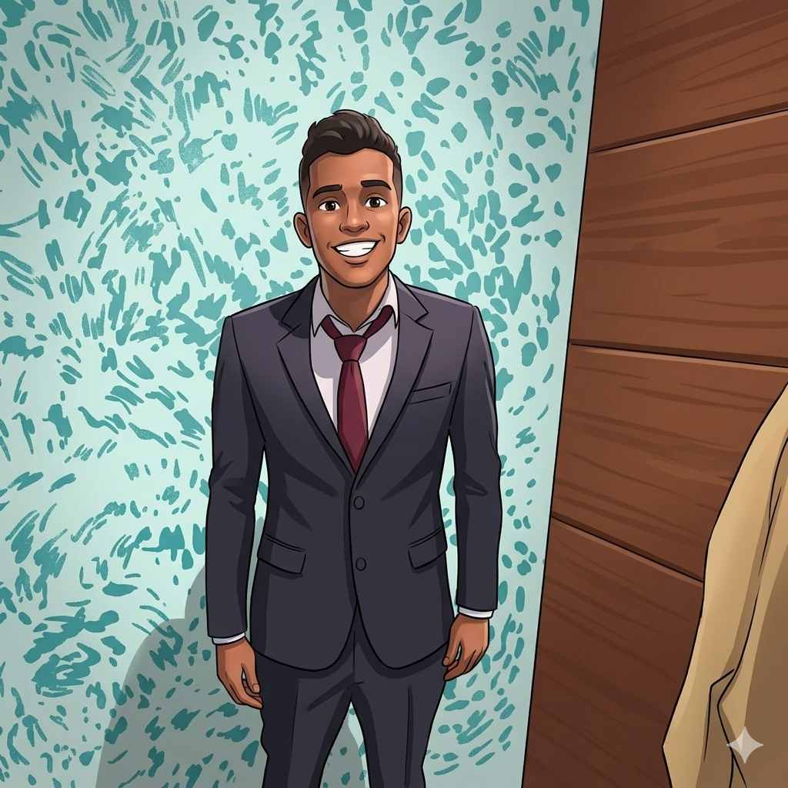

Perfil del Estudiante

Edward Sanchez
Soy estudiante de la Universidad Tecnológica de Panamá (UTP) en el grupo 1S3221 de la materia Desarrollo Web. Me apasiona aprender sobre infraestructuras digitales, optimización de código y nuevas tecnologías. Mi objetivo con este laboratorio es consolidar bases sólidas en maquetación interactiva y control de versiones colaborativo.
Hobbies e Intereses
- 💻 Programación: Explorar nuevas metodologías de maquetación y desarrollo Frontend.
- 🐕 Paseos con Toby: Compartir tiempo libre al aire libre paseando a mi mascota.
- 📚 Tecnología: Investigar sobre las últimas tendencias de software y redes de comunicación.
🎯 Meta del Semestre (IIS-2026)
Dominar a la perfección la maquetación avanzada con Flexbox y Grid, comprender a fondo los flujos de colaboración en repositorios de Git y GitHub, y culminar el semestre aprobando la materia de Desarrollo Web con la máxima calificación posible.